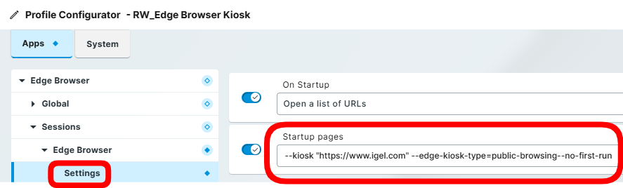
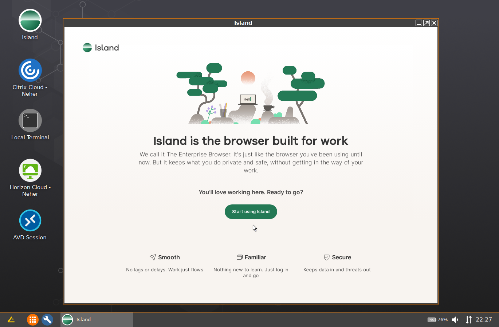

HOWTO Browsers
IGEL OS 12 has the following browsers. Other browsers are planned.
| /usr/bin/igel-minibrowser --url https://tinyurl.com/igel-docs
|
Q: How to reload the page while bypassing the browser cache?
A: Run the following command in the browser tab: Ctrl + Shift + R. This keeps cookies, keeps login session, and reloads all page resources from the server
Q: How to set default browser in IGEL OS 12?
A: IGEL KB: How to Set the Default Browser in IGEL OS 12
Q: What are commands to see browsers on system and set default browser?
A: Here are some commands that can be used:
- Options for
get-browsers:
- Check current default browser:
| xdg-settings get default-web-browser
|
- Set default (example: Firefox):
| xdg-settings set default-web-browser firefox.desktop
|
- Open URL with the default browser
| xdg-open https://tinyurl.com/igel-docs
|
Q: How to configure Edge Browser in Kiosk Mode
A: Apps -> Edge Browser > Sessions -> Settings -> Startup pages:
| --kiosk "https://www.igel.com" --edge-kiosk-type=public-browsing--not-first-run
|

Q: How to configure Firefox to open Citrix ICA file?
A In the Firefox profile / global settings / custom setup, create a policy;
| Policy Name: Handlers
Policy value: {"extensions":{"ica":{"action":"useSystemDefault","ask":false}}}
|
Q: How to configure Firefox to open Horizon
A In the Firefox profile / global settings / advanced / custom preferences.
- Mode: pref
- Custom preference: AutoLaunchProtocolsFromOrigins
- Type: String
- Value:
| [{"allowed_origins":["https://****"],"protocol":"horizon-client"}]
|
Q: How to disable sign-in option in Microsoft Edge?
A: Set the following in profile Edge Browser > Global Settings > Custom Setup > Custom Policies
| "BrowserSignin": 0, // disable browser sign-in
"NonRemovableProfileEnabled": false // recommended alongside BrowserSignin
|
Q: How to disable offering to save password in Microsoft Edge?
A: Set the following in profile Edge Browser > Global Settings > Custom Setup > Custom Policies
| "PasswordManagerEnabled": false // disable password manager
|
Q: How to disable checking for updates for Microsoft Edge?
A: Set the following in profile Edge Browser > Global Settings > Custom Setup > Custom Policies
| "UpdateDefault": 0 // disable checking for updates to edge
|
Q: How to control audio / microphone for Microsoft Edge?
A: Set the following in profile Edge Browser > Global Settings > Custom Setup > Custom Policies
| "AudioCaptureAllowed": true // allow all sites
|
| "AudioCaptureAllowed": false, // do not allow
"AudioCaptureAllowedUrls": ["https://trusted-site.example"] // exceptions
|
Q: How to open URL in Edge in full screen?
A: Here is an example:
| microsoft-edge-stable --start-maximized "https://www.igel.com"
|
OS 12: Running Progressive Web Apps (PWA)
PWA URLs
| Name |
Progressive Web App Url |
Icon |
| Google Drive |
https://drive.google.com/?lfhs=2 |
|
| Google Mail |
https://mail.google.com/mail/?usp=installed_webapp |
LINK to icon |
| Google Maps |
https://www.google.com/maps?force=tt&source=ttpwa |
|
| Microsoft 365 Copilot |
https://m365.cloud.microsoft |
LINK to icon |
| Microsoft Copilot |
https://copilot.cloud.microsoft/?fromcode=cmc&redirectid=95DE602277C6464DA06ED6A3396BCAC8&auth=2 |
LINK to icon |
| Microsoft Excel |
https://excel.cloud.microsoft |
LINK to icon |
| Microsoft Outlook |
https://outlook.cloud.microsoft |
LINK to icon |
| Microsoft PowerPoint |
https://powerpoint.cloud.microsoft |
LINK to icon |
| Microsoft Teams |
https://teams.cloud.microsoft |
LINK to icon |
| Microsoft Word |
https://word.cloud.microsoft |
LINK to icon |
| Omnissa TestDrive |
https://testdrive.vidmpreview.com/authcontrol/auth/request |
LINK to icon |
| YouTube |
https://www.youtube.com/?feature=ytca |
|
NOTE: After running a PWA for the first time, reboot device and the icon for the app will be updated. If issue with icon, then download icon and add to profile setting Progressive Web App Icon (optional). Use UMS files to download icons and save into /wfs.
Other Browsers
Custom Partitions (CP) can be created for the following browsers:
- Google Chrome
- Microsoft Edge
- Island

Citrix Enterprise Browser
Create Watcher Script to Automatically Run a Downloaded Program
-
Automatically running a downloaded program from browser is blocked
-
Create a watcher script to look for the program type to start
-
Create a custom application for this script and set it to auto start / run (System > System Customization > Custom Application)
NOTE: This method can be used to start Bomgar remote support session from the browser
1
2
3
4
5
6
7
8
9
10
11
12
13
14
15
16
17
18
19
20
21
22
23
24
25
26 | #!/bin/bash
#set -x
#trap read debug
#
# Watcher script that can be setup as custom application that is
# auto started to watch the DOWNLOAD_DIR folder for file to
# execute
#
DOWNLOAD_DIR="$HOME/Downloads"
ACTION="watcher-${DOWNLOAD_DIR}"
LOGGER="logger -it ${ACTION}"
inotifywait -m -e close_write "$DOWNLOAD_DIR" | while read dir action file; do
echo "Detected: $file" | $LOGGER
# Run .bin automatically
if [[ "$file" == *.bin ]]; then
echo "Running program: $file" | $LOGGER
chmod +x "$dir/$file"
"$dir/$file" &
fi
done
|
Browser Automation with Selenium
1
2
3
4
5
6
7
8
9
10
11
12
13
14
15
16
17
18
19
20
21
22
23
24
25
26
27
28
29
30
31
32
33
34
35
36
37
38
39
40
41
42
43
44
45
46
47
48
49
50
51
52
53
54
55
56
57
58
59
60
61
62
63
64
65
66
67
68
69
70
71
72
73
74
75
76
77
78
79
80
81
82
83
84
85
86
87
88
89
90
91
92
93
94
95
96
97
98
99
100
101
102
103
104
105
106
107
108
109
110
111
112
113
114
115
116
117
118
119
120
121
122
123
124
125
126
127
128
129
130
131
132
133
134
135
136
137
138
139
140
141
142
143
144
145
146
147
148
149
150
151
152
153
154
155
156
157
158
159
160
161
162
163
164
165
166
167
168
169
170
171
172
173
174
175
176
177
178
179
180
181
182
183
184
185
186
187
188
189
190
191
192
193
194
195
196
197
198
199
200
201
202
203
204
205
206
207
208
209
210
211
212
213
214
215
216
217
218
219
220
221
222
223
224
225
226
227
228
229
230
231
232
233
234
235
236
237
238
239
240
241
242
243
244
245
246
247
248
249
250
251
252
253
254
255
256
257
258
259
260
261
262
263
264
265
266
267
268
269
270
271
272 | cat << "EOF" > EdgeKiosk.java
import org.openqa.selenium.Dimension;
import org.openqa.selenium.Point;
import org.openqa.selenium.WebDriver;
import org.openqa.selenium.edge.EdgeDriver;
import org.openqa.selenium.edge.EdgeOptions;
import java.awt.GraphicsConfiguration;
import java.awt.GraphicsDevice;
import java.awt.GraphicsEnvironment;
import java.awt.Insets;
import java.awt.Rectangle;
import java.awt.Toolkit;
import java.io.IOException;
import java.nio.file.Files;
import java.nio.file.Path;
import java.time.Duration;
import java.util.ArrayList;
import java.util.Comparator;
import java.util.List;
public class EdgeKiosk {
// Total runtime.
private static final int LOOP_SECONDS = 300;
// Seconds between refreshes.
private static final int REFRESH_INTERVAL_SECONDS = 10;
// A separate Edge process and profile are created for every URL.
private static final String[] URLS = {
"https://www.igel.com",
"https://www.hp.com",
"https://www.lg.com",
"https://www.lenovo.com",
"https://getnerdio.com",
"https://www.island.io"
};
/*
* Chromium/Edge true --kiosk mode forces a full-screen window and therefore
* conflicts with tiling several independent windows on one display.
*
* This program uses locked-down app mode instead. It removes the normal
* browser toolbar, address bar, tabs, first-run UI, notifications, and most
* keyboard/browser chrome while still allowing Selenium to position and
* size every window.
*/
public static void main(String[] args) {
List<BrowserInstance> browsers = new ArrayList<>();
Path profileRoot = null;
try {
Rectangle display = getPrimaryDisplayWorkArea();
List<Rectangle> tiles = calculateTiles(display, URLS.length);
profileRoot = Files.createTempDirectory("edge-kiosk-profiles-");
System.out.printf(
"Display work area: %dx%d at (%d,%d)%n",
display.width,
display.height,
display.x,
display.y
);
for (int i = 0; i < URLS.length; i++) {
String url = URLS[i];
Rectangle tile = tiles.get(i);
Path profile = profileRoot.resolve("edge-" + i);
Files.createDirectories(profile);
EdgeOptions options = createLockedDownOptions(url, profile, tile);
WebDriver driver = new EdgeDriver(options);
driver.manage().timeouts().pageLoadTimeout(Duration.ofSeconds(60));
driver.manage().timeouts().implicitlyWait(Duration.ofSeconds(5));
// Apply the bounds again after startup because some window
// managers adjust the initial --window-position/--window-size.
driver.manage().window().setPosition(new Point(tile.x, tile.y));
driver.manage().window().setSize(new Dimension(tile.width, tile.height));
// --app opens the URL during process startup. Navigate again so
// Selenium waits for the initial document to finish loading.
driver.get(url);
browsers.add(new BrowserInstance(driver, url));
System.out.printf(
"Opened %s at x=%d y=%d width=%d height=%d%n",
url,
tile.x,
tile.y,
tile.width,
tile.height
);
}
refreshUntilFinished(browsers);
} catch (Exception ex) {
ex.printStackTrace();
} finally {
closeBrowsers(browsers);
if (profileRoot != null) {
deleteDirectoryQuietly(profileRoot);
}
System.out.println("Finished.");
}
}
private static EdgeOptions createLockedDownOptions(
String url,
Path profile,
Rectangle tile
) {
EdgeOptions options = new EdgeOptions();
options.addArguments(
"--app=" + url,
"--user-data-dir=" + profile.toAbsolutePath(),
"--window-position=" + tile.x + "," + tile.y,
"--window-size=" + tile.width + "," + tile.height,
"--no-first-run",
"--no-default-browser-check",
"--disable-session-crashed-bubble",
"--disable-infobars",
"--disable-notifications",
"--disable-popup-blocking",
"--disable-translate",
"--disable-features=msEdgeSidebarV2,msEdgeShoppingAssistant,msEdgeCollections,EdgeFollow,ReadAnything",
"--autoplay-policy=no-user-gesture-required"
);
// Optional for an additional private-session boundary:
// options.addArguments("--inprivate");
return options;
}
private static void refreshUntilFinished(List<BrowserInstance> browsers)
throws InterruptedException {
long endTime = System.nanoTime() + Duration.ofSeconds(LOOP_SECONDS).toNanos();
int cycle = 1;
while (System.nanoTime() < endTime) {
System.out.println("Refresh cycle " + cycle);
for (BrowserInstance browser : browsers) {
System.out.println("Refreshing: " + browser.url);
try {
browser.driver.navigate().refresh();
} catch (Exception ex) {
System.out.println(
"Refresh failed for " + browser.url + ": " + ex.getMessage()
);
}
}
cycle++;
long remainingNanos = endTime - System.nanoTime();
if (remainingNanos <= 0) {
break;
}
long sleepMillis = Math.min(
Duration.ofSeconds(REFRESH_INTERVAL_SECONDS).toMillis(),
Duration.ofNanos(remainingNanos).toMillis()
);
if (sleepMillis > 0) {
Thread.sleep(sleepMillis);
}
}
}
private static Rectangle getPrimaryDisplayWorkArea() {
GraphicsEnvironment environment =
GraphicsEnvironment.getLocalGraphicsEnvironment();
GraphicsDevice device = environment.getDefaultScreenDevice();
GraphicsConfiguration configuration = device.getDefaultConfiguration();
Rectangle bounds = configuration.getBounds();
Insets insets = Toolkit.getDefaultToolkit().getScreenInsets(configuration);
return new Rectangle(
bounds.x + insets.left,
bounds.y + insets.top,
bounds.width - insets.left - insets.right,
bounds.height - insets.top - insets.bottom
);
}
private static List<Rectangle> calculateTiles(Rectangle display, int count) {
List<Rectangle> tiles = new ArrayList<>();
if (count <= 0) {
return tiles;
}
int columns = (int) Math.ceil(Math.sqrt(count));
int rows = (int) Math.ceil((double) count / columns);
int baseWidth = display.width / columns;
int baseHeight = display.height / rows;
for (int index = 0; index < count; index++) {
int column = index % columns;
int row = index / columns;
int x = display.x + (column * baseWidth);
int y = display.y + (row * baseHeight);
// Let the last column/row consume any remainder pixels.
int width = (column == columns - 1)
? display.x + display.width - x
: baseWidth;
int height = (row == rows - 1)
? display.y + display.height - y
: baseHeight;
tiles.add(new Rectangle(x, y, width, height));
}
return tiles;
}
private static void closeBrowsers(List<BrowserInstance> browsers) {
for (BrowserInstance browser : browsers) {
try {
browser.driver.quit();
} catch (Exception ex) {
System.out.println(
"Unable to close Edge for " + browser.url + ": " + ex.getMessage()
);
}
}
}
private static void deleteDirectoryQuietly(Path directory) {
try (var paths = Files.walk(directory)) {
paths.sorted(Comparator.reverseOrder())
.forEach(path -> {
try {
Files.deleteIfExists(path);
} catch (IOException ignored) {
// Temporary browser profiles are best-effort cleanup.
}
});
} catch (IOException ignored) {
// Temporary browser profiles are best-effort cleanup.
}
}
private static final class BrowserInstance {
private final WebDriver driver;
private final String url;
private BrowserInstance(WebDriver driver, String url) {
this.driver = driver;
this.url = url;
}
}
}
EOF
|
- Compile and run Edge Kiosk
1
2
3
4
5
6
7
8
9
10
11
12
13
14
15
16
17
18
19
20
21
22
23
24
25
26
27 | cat << "EOF" > edge-kiosk.sh
#!/bin/bash
#set -x
#trap read debug
#
# set JAVA_HOME
#
pushd .
cd /services/azul_openjdk/zulu*
eval JAVA_HOME=$(pwd)
PATH=$JAVA_HOME/bin:$PATH
popd
#
# compile EdgeKiosk.java
#
javac -cp ".:/services/selenium/*" EdgeKiosk.java
#
# run EdgeKiosk
#
java -cp ".:/services/selenium/*" EdgeKiosk
EOF
chmod a+x edge-kiosk.sh
|
Tiled Locked Down Browser Windows
1
2
3
4
5
6
7
8
9
10
11
12
13
14
15
16
17
18
19
20
21
22
23
24
25
26
27
28
29
30
31
32
33
34
35
36
37
38
39
40
41
42
43
44
45
46
47
48
49
50
51
52
53
54
55
56
57
58
59
60
61
62
63
64
65
66
67
68
69
70
71
72
73
74
75
76
77
78
79
80
81
82
83
84
85
86
87
88
89
90
91
92
93
94
95
96
97
98
99
100
101
102
103
104
105
106
107
108
109
110
111
112
113
114
115
116
117
118
119
120
121
122
123
124
125
126
127
128
129
130
131
132
133
134
135
136
137
138
139
140
141
142
143
144
145
146
147
148
149
150
151
152
153
154
155
156
157
158
159
160
161
162
163
164
165
166
167
168
169
170
171
172
173
174
175
176
177
178
179
180
181
182
183
184
185
186
187
188
189
190
191
192
193
194
195
196
197
198
199
200
201
202
203
204
205
206
207
208
209
210
211
212
213
214
215
216
217
218
219
220
221
222
223
224
225
226
227
228
229
230
231
232
233
234
235
236
237
238
239
240
241
242
243
244
245
246
247
248
249
250
251
252
253
254
255
256
257
258
259
260
261
262
263
264
265
266
267
268
269
270
271
272
273
274
275
276
277
278
279
280
281
282
283
284
285
286
287
288
289
290
291
292
293
294
295
296
297
298
299
300
301
302
303
304
305
306
307
308
309
310
311
312
313
314
315
316
317
318
319
320
321
322
323
324
325
326
327
328
329
330
331
332
333
334
335
336
337
338
339
340
341
342
343
344
345
346
347
348
349
350
351
352
353
354
355
356
357
358
359
360
361
362
363
364
365
366
367
368
369
370
371
372
373
374
375
376
377
378
379
380
381
382
383
384
385
386
387
388
389
390
391
392
393
394
395
396
397
398
399
400
401
402
403
404
405
406
407
408
409
410
411
412
413
414
415
416
417
418
419
420
421
422
423
424
425
426
427
428
429
430
431
432
433
434
435
436
437
438
439
440
441
442
443
444
445
446
447
448
449
450
451
452
453
454
455
456
457
458
459
460
461
462
463
464
465
466
467
468
469
470
471
472
473
474
475
476
477
478
479
480
481
482
483
484
485
486
487
488
489
490
491
492
493
494
495
496
497
498
499
500
501
502
503
504
505
506
507
508
509
510
511
512
513
514
515
516
517
518
519
520
521
522
523
524
525
526
527
528
529
530
531
532
533
534
535
536
537
538
539
540
541
542
543
544
545
546
547
548
549
550
551
552
553
554
555
556
557
558
559
560
561
562
563
564
565
566
567
568
569
570
571
572
573
574
575
576
577
578
579
580
581
582
583
584
585
586
587
588
589
590
591
592
593
594
595
596
597
598
599
600
601
602
603
604
605
606
607
608
609
610
611
612
613
614
615
616
617 | cat <<'EOF' > EdgeKiosk.java
import java.awt.Dimension;
import java.awt.Toolkit;
import java.io.File;
import java.io.IOException;
import java.net.URI;
import java.net.http.HttpClient;
import java.net.http.HttpRequest;
import java.net.http.HttpResponse;
import java.net.http.WebSocket;
import java.time.Duration;
import java.util.ArrayList;
import java.util.List;
import java.util.concurrent.CompletionStage;
import java.util.concurrent.TimeUnit;
import java.util.regex.Matcher;
import java.util.regex.Pattern;
public class EdgeKiosk {
/*
* REFRESH:
* Refresh the existing Edge window through DevTools.
*
* RESTART:
* Kill all Edge processes using the window's profile and relaunch Edge.
*/
private enum RefreshMode {
REFRESH,
RESTART
}
private static final RefreshMode REFRESH_MODE = RefreshMode.REFRESH;
// Total runtime.
private static final int LOOP_SECONDS = 300;
// Refresh or restart interval.
private static final int REFRESH_INTERVAL_SECONDS = 10;
// Time allowed for Edge DevTools to become available.
private static final int DEVTOOLS_START_TIMEOUT_SECONDS = 15;
// Starting TCP port for Edge DevTools.
private static final int DEVTOOLS_BASE_PORT = 9222;
private static final String[] URLS = {
"https://www.igel.com",
"https://www.island.io"
};
private static final HttpClient HTTP_CLIENT = HttpClient.newBuilder()
.connectTimeout(Duration.ofSeconds(5))
.build();
private static final Pattern WEBSOCKET_URL_PATTERN = Pattern.compile(
"\"webSocketDebuggerUrl\"\\s*:\\s*\"([^\"]+)\""
);
private static class Browser {
Process process;
final String url;
final String profileDirectory;
final int devToolsPort;
final int x;
final int y;
final int width;
final int height;
Browser(
String url,
String profileDirectory,
int devToolsPort,
int x,
int y,
int width,
int height) {
this.url = url;
this.profileDirectory = profileDirectory;
this.devToolsPort = devToolsPort;
this.x = x;
this.y = y;
this.width = width;
this.height = height;
}
}
public static void main(String[] args) throws Exception {
String edge = findEdge();
if (edge == null) {
System.err.println("Unable to locate Microsoft Edge.");
System.err.println("Set EDGE_BINARY=/path/to/microsoft-edge");
System.exit(1);
}
System.out.println("Edge binary: " + edge);
System.out.println("Refresh mode: " + REFRESH_MODE);
System.out.println("Runtime: " + LOOP_SECONDS + " seconds");
System.out.println(
"Refresh interval: " +
REFRESH_INTERVAL_SECONDS +
" seconds"
);
Dimension screen = Toolkit.getDefaultToolkit().getScreenSize();
int count = URLS.length;
int cols = (int) Math.ceil(Math.sqrt(count));
int rows = (int) Math.ceil((double) count / cols);
int tileWidth = screen.width / cols;
int tileHeight = screen.height / rows;
List<Browser> browsers = new ArrayList<>();
Runtime.getRuntime().addShutdownHook(new Thread(() -> {
System.out.println();
System.out.println("Stopping Edge kiosk windows...");
for (Browser browser : browsers) {
stopBrowser(browser);
}
}));
try {
/*
* Remove Edge instances left behind by an earlier run of this
* program before launching new windows.
*/
for (int i = 0; i < count; i++) {
String profileDirectory = getProfileDirectory(i);
killProcessesForProfile(profileDirectory);
}
for (int i = 0; i < count; i++) {
int row = i / cols;
int col = i % cols;
Browser browser = new Browser(
URLS[i],
getProfileDirectory(i),
DEVTOOLS_BASE_PORT + i,
col * tileWidth,
row * tileHeight,
tileWidth,
tileHeight
);
browsers.add(browser);
launch(edge, browser);
if (REFRESH_MODE == RefreshMode.REFRESH) {
if (!waitForDevTools(browser)) {
System.err.println(
"Warning: DevTools did not start for " +
browser.url
);
}
}
Thread.sleep(1000);
}
long endTime =
System.currentTimeMillis() + LOOP_SECONDS * 1000L;
while (System.currentTimeMillis() < endTime) {
long remainingMilliseconds =
endTime - System.currentTimeMillis();
long sleepMilliseconds = Math.min(
REFRESH_INTERVAL_SECONDS * 1000L,
remainingMilliseconds
);
if (sleepMilliseconds <= 0) {
break;
}
Thread.sleep(sleepMilliseconds);
if (System.currentTimeMillis() >= endTime) {
break;
}
for (Browser browser : browsers) {
maintainBrowser(edge, browser);
}
}
} finally {
for (Browser browser : browsers) {
stopBrowser(browser);
}
}
}
private static String getProfileDirectory(int index) {
return "/tmp/edge-kiosk-profile-" + index;
}
private static void maintainBrowser(
String edge,
Browser browser) throws Exception {
if (REFRESH_MODE == RefreshMode.RESTART) {
restartBrowser(edge, browser);
return;
}
/*
* In REFRESH mode, first check whether the Edge DevTools endpoint is
* still responding. If it is not responding, Edge probably crashed.
*/
if (!isDevToolsAvailable(browser)) {
System.err.println(
"Edge is not responding for " +
browser.url +
". Relaunching it."
);
restartBrowser(edge, browser);
return;
}
try {
refreshBrowser(browser);
System.out.println(
"Refreshed: " + browser.url
);
} catch (Exception exception) {
System.err.println(
"Refresh failed for " +
browser.url +
": " +
exception.getMessage()
);
System.err.println("Relaunching failed Edge window.");
restartBrowser(edge, browser);
}
}
private static void restartBrowser(
String edge,
Browser browser) throws Exception {
System.out.println("Restarting: " + browser.url);
stopBrowser(browser);
/*
* Give Edge time to release the user profile lock and DevTools port.
*/
Thread.sleep(1000);
launch(edge, browser);
if (REFRESH_MODE == RefreshMode.REFRESH) {
if (!waitForDevTools(browser)) {
System.err.println(
"DevTools did not become available after restarting " +
browser.url
);
}
}
}
private static void launch(
String edge,
Browser browser) throws IOException {
List<String> command = new ArrayList<>();
command.add(edge);
// App mode removes the normal address bar and browser controls.
command.add("--app=" + browser.url);
// Each window gets a dedicated Edge profile.
command.add("--user-data-dir=" + browser.profileDirectory);
/*
* DevTools is used to refresh the existing page without restarting
* Edge. Each Edge instance needs its own TCP port.
*/
command.add(
"--remote-debugging-port=" + browser.devToolsPort
);
command.add("--remote-debugging-address=127.0.0.1");
command.add("--remote-allow-origins=*");
command.add("--no-first-run");
command.add("--no-default-browser-check");
command.add("--disable-session-crashed-bubble");
command.add("--disable-features=Translate");
command.add("--disable-sync");
command.add("--overscroll-history-navigation=0");
command.add(
"--window-position=" +
browser.x +
"," +
browser.y
);
command.add(
"--window-size=" +
browser.width +
"," +
browser.height
);
ProcessBuilder processBuilder = new ProcessBuilder(command);
processBuilder.inheritIO();
browser.process = processBuilder.start();
System.out.println(
"Launched: " +
browser.url +
" at " +
browser.x +
"," +
browser.y +
" size " +
browser.width +
"x" +
browser.height
);
}
private static boolean waitForDevTools(Browser browser) {
long deadline = System.currentTimeMillis()
+ DEVTOOLS_START_TIMEOUT_SECONDS * 1000L;
while (System.currentTimeMillis() < deadline) {
if (isDevToolsAvailable(browser)) {
return true;
}
try {
Thread.sleep(250);
} catch (InterruptedException exception) {
Thread.currentThread().interrupt();
return false;
}
}
return false;
}
private static boolean isDevToolsAvailable(Browser browser) {
try {
HttpRequest request = HttpRequest.newBuilder()
.uri(URI.create(
"http://127.0.0.1:" +
browser.devToolsPort +
"/json/list"
))
.timeout(Duration.ofSeconds(2))
.GET()
.build();
HttpResponse<String> response = HTTP_CLIENT.send(
request,
HttpResponse.BodyHandlers.ofString()
);
return response.statusCode() == 200
&& response.body().contains(
"webSocketDebuggerUrl"
);
} catch (Exception exception) {
return false;
}
}
private static void refreshBrowser(Browser browser)
throws Exception {
String webSocketUrl = getPageWebSocketUrl(browser);
if (webSocketUrl == null) {
throw new IOException(
"No page WebSocket endpoint was returned by Edge"
);
}
WebSocket.Listener listener = new WebSocket.Listener() {
@Override
public void onOpen(WebSocket webSocket) {
webSocket.request(1);
}
@Override
public CompletionStage<?> onText(
WebSocket webSocket,
CharSequence data,
boolean last) {
webSocket.request(1);
return null;
}
@Override
public void onError(
WebSocket webSocket,
Throwable error) {
System.err.println(
"DevTools WebSocket error: " +
error.getMessage()
);
}
};
WebSocket webSocket = HTTP_CLIENT.newWebSocketBuilder()
.connectTimeout(Duration.ofSeconds(5))
.buildAsync(
URI.create(webSocketUrl),
listener
)
.get(5, TimeUnit.SECONDS);
/*
* Page.reload refreshes the current app-mode page.
* ignoreCache=true forces the page to retrieve current content.
*/
String command =
"{\"id\":1,\"method\":\"Page.reload\"," +
"\"params\":{\"ignoreCache\":true}}";
webSocket.sendText(command, true)
.get(5, TimeUnit.SECONDS);
webSocket.sendClose(
WebSocket.NORMAL_CLOSURE,
"Refresh complete"
).get(5, TimeUnit.SECONDS);
}
private static String getPageWebSocketUrl(Browser browser)
throws Exception {
HttpRequest request = HttpRequest.newBuilder()
.uri(URI.create(
"http://127.0.0.1:" +
browser.devToolsPort +
"/json/list"
))
.timeout(Duration.ofSeconds(5))
.GET()
.build();
HttpResponse<String> response = HTTP_CLIENT.send(
request,
HttpResponse.BodyHandlers.ofString()
);
if (response.statusCode() != 200) {
throw new IOException(
"DevTools returned HTTP " +
response.statusCode()
);
}
Matcher matcher =
WEBSOCKET_URL_PATTERN.matcher(response.body());
if (matcher.find()) {
return matcher.group(1);
}
return null;
}
private static void stopBrowser(Browser browser) {
/*
* First terminate the Process object and any children Java can still
* see. Edge sometimes moves renderer processes outside the original
* process tree, so the profile-based pkill below is also required.
*/
if (browser.process != null) {
try {
browser.process.descendants().forEach(process -> {
try {
process.destroy();
} catch (Exception ignored) {
}
});
browser.process.destroy();
if (!browser.process.waitFor(
3,
TimeUnit.SECONDS)) {
browser.process.descendants().forEach(process -> {
try {
process.destroyForcibly();
} catch (Exception ignored) {
}
});
browser.process.destroyForcibly();
}
} catch (Exception exception) {
System.err.println(
"Unable to stop Java Edge process: " +
exception.getMessage()
);
}
}
/*
* Kill any remaining Edge processes associated with this particular
* profile. This prevents old app windows from accumulating.
*/
killProcessesForProfile(browser.profileDirectory);
browser.process = null;
}
private static void killProcessesForProfile(
String profileDirectory) {
String processPattern =
"--user-data-dir=" + profileDirectory;
try {
Process terminate = new ProcessBuilder(
"pkill",
"-TERM",
"-f",
processPattern
).start();
terminate.waitFor(2, TimeUnit.SECONDS);
Thread.sleep(500);
Process forceKill = new ProcessBuilder(
"pkill",
"-KILL",
"-f",
processPattern
).start();
forceKill.waitFor(2, TimeUnit.SECONDS);
} catch (IOException exception) {
System.err.println(
"Warning: pkill is unavailable. " +
"Some detached Edge processes may remain."
);
} catch (InterruptedException exception) {
Thread.currentThread().interrupt();
}
}
private static String findEdge() {
String environmentBinary =
System.getenv("EDGE_BINARY");
if (environmentBinary != null
&& !environmentBinary.isBlank()) {
File file = new File(environmentBinary);
if (file.exists() && file.canExecute()) {
return environmentBinary;
}
System.err.println(
"EDGE_BINARY does not exist or is not executable: " +
environmentBinary
);
}
String[] candidates = {
"/usr/bin/microsoft-edge-stable",
"/usr/bin/microsoft-edge",
"/usr/bin/msedge",
"/snap/bin/microsoft-edge"
};
for (String candidate : candidates) {
File file = new File(candidate);
if (file.exists() && file.canExecute()) {
return candidate;
}
}
return null;
}
}
EOF
|
1
2
3
4
5
6
7
8
9
10
11
12
13
14
15
16
17
18
19
20
21
22
23
24
25
26
27
28
29 | cat << "EOF" > edge-kiosk.sh
#!/bin/bash
#set -x
#trap read debug
#
# set JAVA_HOME
#
pushd .
cd /services/azul_openjdk/zulu*
eval JAVA_HOME=$(pwd)
PATH=$JAVA_HOME/bin:$PATH
popd
#
# compile EdgeKiosk.java
#
javac EdgeKiosk.java
#
# run EdgeKiosk
#
export EDGE_BINARY=/services/edge/usr/bin/microsoft-edge-stable
java EdgeKiosk
EOF
chmod a+x edge-kiosk.sh
|
{kind=link}
{kind=link}
{kind=link}
{kind=link}
{kind=link}
{kind=link}
{kind=link}
{kind=link}